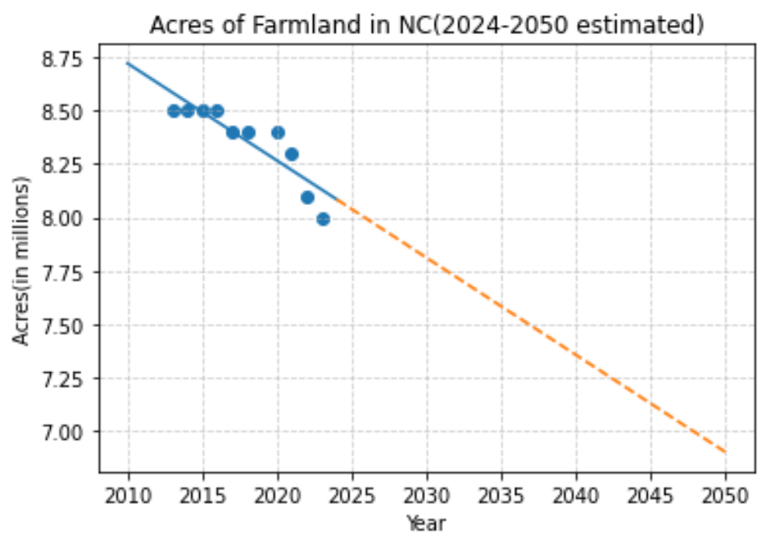
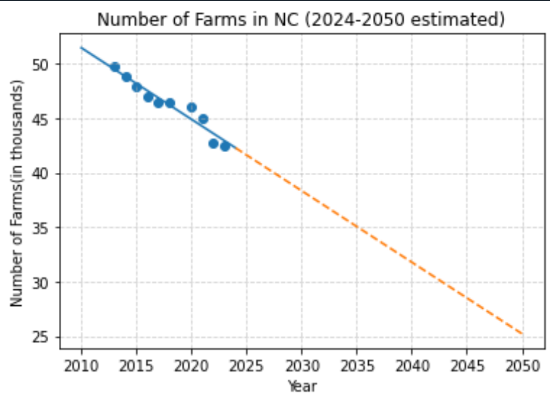
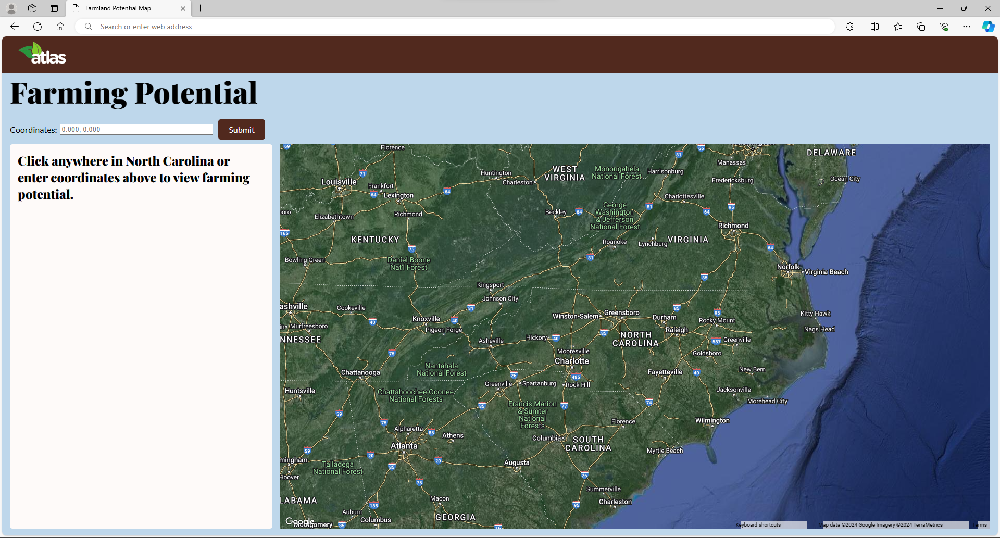

<!DOCTYPE html>
<html>
    <title>Atlas</title>
    <link rel="stylesheet" href="style.css">
    <link rel="preconnect" href="https://fonts.googleapis.com">
    <link rel="preconnect" href="https://fonts.gstatic.com" crossorigin>
    <link href="https://fonts.googleapis.com/css2?family=Lato:ital,wght@0,100;0,300;0,400;0,700;0,900;1,100;1,300;1,400;1,700;1,900&family=Playfair+Display:ital,wght@0,400..900;1,400..900&display=swap" rel="stylesheet">
</html>

<body>
    <div class="navbar" id="navbar">
        <a href="index.html"></a>
    </div>
    <div class="hero-container">
        <div class="hero-text-box">
            <h1 class="home-header">PRESERVE FARMLAND + DEVELOP THE FUTURE</h1>
            <p>Protecting our land for future generations.</p>
            <div class="intro-buttons">
                <button onclick="scrollToContent()" class="home">Learn more</button>
                <a href="map.html"><button class="home">View map</button></a>
            </div>
        </div>
    </div>
    <div class="home-content" id="content-1">
        <div class="big-padding">
            <h2>What is Atlas?</h2>
            <p>
                According to the American Farmland Trust, North Carolina is the second-most threatened state in regards to losing farmland. As much as 20% of NC's farmland has already
                been lost since the past decade, and it's only getting worse. By 2040, the state will lose nearly 1.2 million acres of farmland. Atlas is here to help. We provide novel
                machine learning models to highlight areas where preserving farmland is a high priority. We also understand the need to serve North Carolina's rising population. Therefore
                we provide intuitive tools to help urban developers make environmentally-conscious decisions while choosing where to build.
            </p>
        </div>
    </div>
    <div class="home-content">
        <div id="home-plot-big">
            <h2>Visualizing the Problem</h2>
            <div class="home-plots">
                
                
            </div>
        </div>
        <div>
            <div>
                <label>Enter a year to see the predicted acres of farmland and number of farms remaining: </label>
                <input type="text" id="homeProjectionInput">
                <button onclick="homeProjection()" class="home-down">Submit</button>
            </div>
            <p id="homeProjectionResult1"></p>
            <p id="homeProjectionResult2"></p>
        </div>
    </div>
    <div class="home-content">
        <div class="big-padding">
            <h2>Our Tool</h2>
            <p>
                Atlas's key product is the Farming Potential Mapping tool. At the click of a mouse, a myriad of statistics and projections are available for any location in North
                Carolina. Climate and soil data can be used to assess farmland quality. Land categorization creates a better understanding of human impacts. Most importantly, the
                Farming Potential rating synthesizes all of this data and more to concisely convey what farmland to prioritize. These measures will be used to maximize North Carolina's
                agricultural output without sacrificing our state's thriving spirit.
            </p>
        </div>
        
    </div>

    <script>
        window.onscroll = function() {
            scrollFunction();
        };
    
        function scrollFunction() {
            var navbar = document.getElementById("navbar");
            if (document.body.scrollTop > 300 || document.documentElement.scrollTop > 300) {
                navbar.style.display = "flex";
            } else {
                navbar.style.display = "none";
            }
        }

        function scrollToContent() {
            var contentElement = document.getElementById("content-1");
            contentElement.scrollIntoView({ behavior: 'smooth'});
        }

        function homeProjection() {
            let year = document.getElementById("homeProjectionInput").value
            let theAcresAnswer=9.98974240e+01+ (-4.53627157e-02*parseFloat(year))
            let theFarmsAnswer = 1.36968138e+03 +(-6.55831003e-01*parseFloat(year))
            document.getElementById("homeProjectionResult1").textContent = "Acres Remaining: " + Math.round(theAcresAnswer*100)/100 + " million"
            document.getElementById("homeProjectionResult2").textContent = "Farms Remaining: " + Math.round(theFarmsAnswer * 1000)/1000 + " thousand"
        }
    </script>
</body>